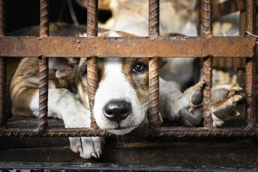

Ask anyone who has adopted a pet and they’ll share with you their story of love, fun and companionship. Why? Because shelter pets are amazing! Within the next year, millions of cats and dogs will enter shelters and rescue groups nationwide. In that time, even more people intend to bring a pet into their homes, which is why we’re working to show why shelters should be your first choice and preferred way to acquire a pet. Remember: Dogs and cats who are taken into the care of shelters and rescue groups each year find themselves homeless through no fault of their own; “moving” and “landlord issues” are the top reasons people give up their pets. This means shelters and rescues are full of loving, spayed or neutered, vaccinated and often trained pets who are just waiting to meet you! By adopting a cat or dog from a shelter or rescue, you can rest assured that you have not supported the puppy mill industry. Adopting a pet from a shelter or rescue is a win-win, for you and the pet. So, what are you waiting for? Begin your search for cats and dogs available for adoption near you today. #AdoptPureLove